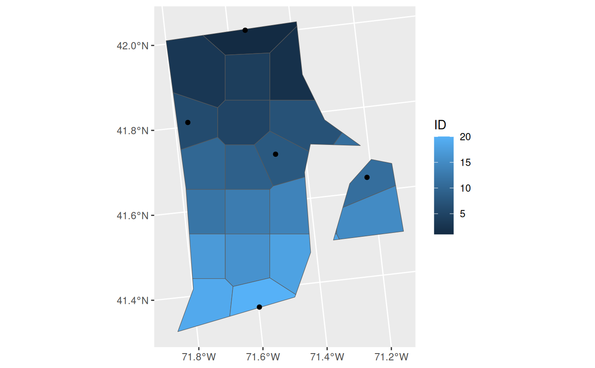

Design additional collections around already existing collections
OpportunisticSample.RdThis function utilizes a regular, or nearly so in the case of existing collections, grid of points to develop a sampling scheme or n polygons.
Arguments
- polygon
the input sf polygon, i.e. species range or administrative unit, where sampling is desired.
- n
Numeric. The total number of desired collections. Defaults to 20.
- collections
an sf point geometry data set of where existing collections have been made.
- reps
further arguments passed to np.boot
- BS.reps
number of bootstrap replicates for evaluating results.
Value
A list containing two sublists, the first of which 'SummaryData' details the number of voronoi polygons generated, and the results of the bootstrap simulations. The second 'Geometry', contains the final spatial data products, which can be written out on your end. See the vignette for questions about saving the two main types of spatial data models (vector - used here, and raster).
Examples
#' Design additional collections around already existing collections
ri <- spData::us_states |>
dplyr::select(NAME) |>
dplyr::filter(NAME == 'Rhode Island') |>
sf::st_transform(32617)
existing_collections <- sf::st_sample(ri, size = 5) |>
sf::st_as_sf() |>
dplyr::rename(geometry = x)
system.time(
out <- OpportunisticSample(polygon = ri, BS.reps=4999)
) # set very low for example
#> user system elapsed
#> 6.619 0.024 6.648
# the function is actually very fast; 150 voronoi reps, with 9999 BS should only take about
# 7 seconds per species so not much concern on the speed end of things.
ggplot2::ggplot() +
ggplot2::geom_sf(data = out$Geometry, ggplot2::aes(fill = ID)) +
ggplot2::geom_sf(data = existing_collections)
